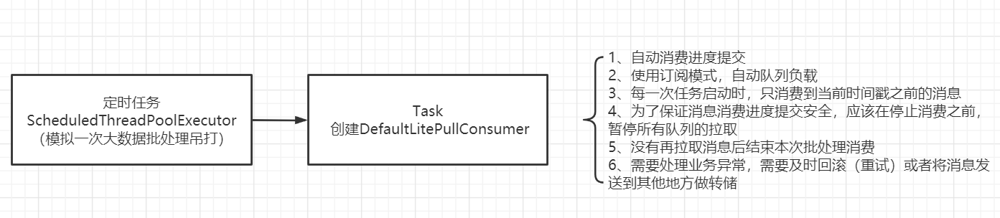
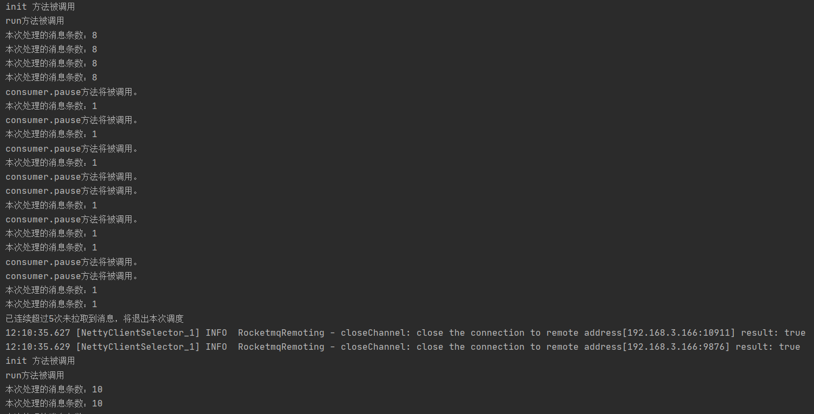

- 01 搭建学习环境准备篇.md.html
- 02 RocketMQ 核心概念扫盲篇.md.html
- 03 消息发送 API 详解与版本变迁说明.md.html
- 04 结合实际应用场景谈消息发送.md.html
- 05 消息发送核心参数与工作原理详解.md.html
- 06 消息发送常见错误与解决方案.md.html
- 07 事务消息使用及方案选型思考.md.html
- 08 消息消费 API 与版本变迁说明.md.html
- 09 DefaultMQPushConsumer 核心参数与工作原理.md.html
- 10 DefaultMQPushConsumer 使用示例与注意事项.md.html
- 11 DefaultLitePullConsumer 核心参数与实战.md.html
- 12 结合实际场景再聊 DefaultLitePullConsumer 的使用.md.html
- 13 结合实际场景顺序消费、消息过滤实战.md.html
- 14 消息消费积压问题排查实战.md.html
- 15 RocketMQ 常用命令实战.md.html
- 16 RocketMQ 集群性能摸高.md.html
- 17 RocketMQ 集群性能调优.md.html
- 18 RocketMQ 集群平滑运维.md.html
- 19 RocketMQ 集群监控（一）.md.html
- 20 RocketMQ 集群监控（二）.md.html
- 21 RocketMQ 集群告警.md.html
- 22 RocketMQ 集群踩坑记.md.html
- 23 消息轨迹、ACL 与多副本搭建.md.html
- 24 RocketMQ-Console 常用页面指标获取逻辑.md.html
- 25 RocketMQ Nameserver 背后的设计理念.md.html
- 26 Java 并发编程实战.md.html
- 27 从 RocketMQ 学基于文件的编程模式（一）.md.html
- 28 从 RocketMQ 学基于文件的编程模式（二）.md.html
- 29 从 RocketMQ 学 Netty 网络编程技巧.md.html
- 30 RocketMQ 学习方法之我见.md.html
12 结合实际场景再聊 DefaultLitePullConsumer 的使用
通过上文的讲解，各位读者朋友们应该对 DefaultLitePullConsumer 有了一个全面的理解，但会不会觉得意犹未尽之感，因为在实战环节只是给出了一个 Demo 级别的示例，本篇将一个大数据领域的消息拉取批处理场景丰富一些 DefaultLitePullConsumer 的使用技巧。
场景描述
现在订单系统会将消息发送到 ORDER_TOPIC 中，大数据这边需要将订单数据导入自己的计算平台，对用户、商家的订单行为进行分析。
PUSH 与 PULL 模式选型
大数据这边只需订阅 ORDER_TOPIC 主题就可以完成数据的同步，那是采用 PUSH 模式还是 PULL 模式呢？
大数据领域通常采用 PULL 模式，因为大数据数据计算都是基于 Spark 等批处理框架，基本都是批处理任务，例如每 5 分钟、每 10 分钟执行一次，而且一个批次能处理的数据越多越好，这样有利于大量数据分布式计算，整体性能计算效能更佳，如果采用 PUSH 模式，虽然也可以指定一次拉取的消息调试，但由于 PUSH 模式是几乎实时的，故每次拉取时服务端几乎不可能挤满了大量的消息，导致一次拉取的消息其实不多，再者是对于一个消费 JVM 来说，面对一个 RocketMQ 集群只会开启一条线程进行消息拉取，而 PULL 模式每一个消费者就可以指定多个消息拉取线程（默认为 20 个），故从消息拉取效能这个方面，PULL 模式占优，并且这个对实时性要求没那么高，故 综合考虑下来，该场景最终采用 PULL 模式。
方案设计
大概的实现思路如下图所示：

代码实现与代码解读
// BigDataPullConsumer.java
package org.apache.rocketmq.example.simple.litepull;
import org.apache.rocketmq.client.consumer.DefaultLitePullConsumer;
import org.apache.rocketmq.client.producer.DefaultMQProducer;
import org.apache.rocketmq.common.consumer.ConsumeFromWhere;
import org.apache.rocketmq.common.message.MessageExt;
import org.apache.rocketmq.common.message.MessageQueue;
import org.apache.rocketmq.common.protocol.heartbeat.MessageModel;
import java.util.HashSet;
import java.util.List;
import java.util.Set;
import java.util.concurrent.*;
import java.util.stream.Collectors;
public class BigDataPullConsumer {
private final ExecutorService executorService = new ThreadPoolExecutor(30, 30, 0L,
TimeUnit.SECONDS, new ArrayBlockingQueue<>(10000), new DefaultThreadFactory("business-executer-
"));
private final ExecutorService pullTaskExecutor = new ThreadPoolExecutor(1, 1, 0L,
TimeUnit.SECONDS, new ArrayBlockingQueue<>(10), new DefaultThreadFactory("pull-batch-"));
private String consumerGroup;
private String nameserverAddr;
private String topic;
private String filter;
private MessageListener messageListener;
private DefaultMQProducer rertyMQProducer;
private PullBatchTask pullBatchTask;
public BigDataPullConsumer(String consumerGroup, String nameserverAddr, String topic, String filter) {
this.consumerGroup = consumerGroup;
this.nameserverAddr = nameserverAddr;
this.topic = topic;
this.filter = filter;
initRetryMQProducer();
}
private void initRetryMQProducer() {
this.rertyMQProducer = new DefaultMQProducer(consumerGroup + "-retry");
this.rertyMQProducer.setNamesrvAddr(this.nameserverAddr);
try {
this.rertyMQProducer.start();
} catch (Throwable e) {
throw new RuntimeException("启动失败", e);
}
}
public void registerMessageListener(MessageListener messageListener) {
this.messageListener = messageListener;
}
public void start() {
//没有考虑重复调用问题
this.pullBatchTask = new PullBatchTask(consumerGroup, nameserverAddr, topic,filter,messageListener);
pullTaskExecutor.submit(this.pullBatchTask);
}
public void stop() {
while(this.pullBatchTask.isRunning()) {
try {
Thread.sleep(1 * 1000);
} catch (Throwable e) {
//ignore
}
}
this.pullBatchTask.stop();
pullTaskExecutor.shutdown();
executorService.shutdown();
try {
//等待重试任务结束
while(executorService.awaitTermination(5, TimeUnit.SECONDS)) {
this.rertyMQProducer.shutdown();
break;
}
} catch (Throwable e) {
//igonre
}
}
/**
* 任务监听
*/
static interface MessageListener {
boolean consumer(List<MessageExt> msgs);
}
/**
* 定时调度任务，例如每 10 分钟会被调度一次
*/
class PullBatchTask implements Runnable {
DefaultLitePullConsumer consumer;
String consumerGroup;
String nameserverAddr;
String topic;
String filter;
private volatile boolean running = true;
private MessageListener messageListener;
public PullBatchTask(String consumerGroup, String nameserverAddr,String topic, String filter,
MessageListener messageListener) {
this.consumerGroup = consumerGroup;
this.nameserverAddr = nameserverAddr;
this.topic = topic;
this.filter = filter;
this.messageListener = messageListener;
init();
}
private void init() {
System.out.println("init 方法被调用");
consumer = new DefaultLitePullConsumer(this.consumerGroup);
consumer.setNamesrvAddr(this.nameserverAddr);
consumer.setAutoCommit(true);
consumer.setMessageModel(MessageModel.CLUSTERING);
consumer.setConsumeFromWhere(ConsumeFromWhere.CONSUME_FROM_FIRST_OFFSET);
try {
consumer.subscribe(topic, filter);
consumer.start();
} catch (Throwable e) {
e.printStackTrace();
}
}
public void stop() {
this.running = false;
this.consumer.shutdown();
}
public boolean isRunning() {
return this.running;
}
@Override
public void run() {
this.running = true;
long startTime = System.currentTimeMillis() - 5 * 1000;
System.out.println("run 方法被调用");
int notFoundMsgCount = 0;
while(running) {
try {
// 拉取一批消息
List<MessageExt> messageExts = consumer.poll();
if(messageExts != null && !messageExts.isEmpty()) {
notFoundMsgCount = 0;//查询到数据，重置为 0；
// 使用一个业务线程池专门消费消息
try {
executorService.submit(new ExecuteTask(messageExts, messageListener));
} catch (RejectedExecutionException e) { //如果被拒绝，停止拉取，业务代码不去拉取，在
// RocketMQ 内部会最终也会触发限流，不会再拉取更多的消息，确保不会触发内存溢出。
boolean retry = true;
while (retry)
try {
Thread.sleep(5 * 1000);//简单的限流
executorService.submit(new ExecuteTask(messageExts, messageListener));
retry = false;
} catch (RejectedExecutionException e2) {
retry = true;
}
}
MessageExt last = messageExts.get(messageExts.size() - 1);
/**
* 如果消息处理的时间超过了该任务的启动时间，本次批处理就先结束
* 停掉该消费者之前，建议先暂停拉取，这样就不会从 broker 中拉取消息
* */
if(last.getStoreTimestamp() > startTime) {
System.out.println("consumer.pause 方法将被调用。");
consumer.pause(buildMessageQueues(last));
}
} else {
notFoundMsgCount ++;
}
//如果连续出现 5 次未拉取到消息，说明本地缓存的消息全部处理，并且 pull 线程已经停止拉取了,此时可以结束本次消
//息拉取，等待下一次调度任务
if(notFoundMsgCount > 5) {
System.out.println("已连续超过 5 次未拉取到消息，将退出本次调度");
break;
}
} catch (Throwable e) {
e.printStackTrace();
}
}
this.running = false;
}
/**
* 构建 MessageQueue
* @param msg
* @return
*/
private Set<MessageQueue> buildMessageQueues(MessageExt msg) {
Set<MessageQueue> queues = new HashSet<>();
MessageQueue queue = new MessageQueue(msg.getTopic(), msg.getBrokerName(), msg.getQueueId());
queues.add(queue);
return queues;
}
}
/**
* 任务执行
*/
class ExecuteTask implements Runnable {
private List<MessageExt> msgs;
private MessageListener messageListener;
public ExecuteTask(List<MessageExt> allMsgs, MessageListener messageListener) {
this.msgs = allMsgs.stream().filter((MessageExt msg) -> msg.getReconsumeTimes() <=
16).collect(Collectors.toList());
this.messageListener = messageListener;
}
@Override
public void run() {
try {
this.messageListener.consumer(this.msgs);
} catch (Throwable e) {
//消息消费失败，需要触发重试
//这里可以参考 PUSH 模式，将消息再次发送到服务端。
try {
for(MessageExt msg : this.msgs) {
msg.setReconsumeTimes(msg.getReconsumeTimes() + 1);
rertyMQProducer.send(msg);
}
} catch (Throwable e2) {
e2.printStackTrace();
// todo 重试
}
}
}
}
}
// DefaultThreadFactory.java
package org.apache.rocketmq.example.simple.litepull;
import java.util.concurrent.ThreadFactory;
import java.util.concurrent.atomic.AtomicInteger;
public class DefaultThreadFactory implements ThreadFactory {
private AtomicInteger num = new AtomicInteger(0);
private String prefix;
public DefaultThreadFactory(String prefix) {
this.prefix = prefix;
}
@Override
public Thread newThread(Runnable r) {
Thread t = new Thread(r);
t.setName(prefix + num.incrementAndGet());
return t;
}
}
// LitePullMain.java
package org.apache.rocketmq.example.simple.litepull;
import org.apache.rocketmq.common.message.MessageExt;
import java.util.List;
import java.util.concurrent.*;
public class LitePullMain {
public static void main(String[] args) {
String consumerGroup = "dw_test_consumer_group";
String nameserverAddr = "192.168.3.166:9876";
String topic = "dw_test";
String filter = "*";
/** 创建调度任务线程池 */
ScheduledExecutorService schedule = new ScheduledThreadPoolExecutor(1, new
DefaultThreadFactory("main-schdule-"));
schedule.scheduleWithFixedDelay(new Runnable() {
@Override
public void run() {
BigDataPullConsumer demoMain = new BigDataPullConsumer(consumerGroup, nameserverAddr, topic,
filter);
demoMain.registerMessageListener(new BigDataPullConsumer.MessageListener() {
/**
* 业务处理
* @param msgs
* @return
*/
@Override
public boolean consumer(List<MessageExt> msgs) {
System.out.println("本次处理的消息条数：" + msgs.size());
return true;
}
});
demoMain.start();
demoMain.stop();
}
}, 1000, 30 * 1000, TimeUnit.MILLISECONDS);
try {
CountDownLatch cdh = new CountDownLatch(1);
cdh.await(10 , TimeUnit.MINUTES);
schedule.shutdown();
} catch (Throwable e) {
//ignore
}
}
}
程序运行结果如下图所示：

符合预期，可以看到两次调度，并且每一次调度都正常结束。
首先对各个类的职责做一个简单介绍：
- MessageListener：用来定义用户的消息处理逻辑。
- PullBatchTask：使用 RocketMQ Lite Pull 消费者进行消息拉取的核心实现。
- ExecuteTask：业务处理任务，在内部实现调用业务监听器，并执行重试相关的逻辑。
- BigDataPullConsumer：本次业务的具体实现类
- LitePullMain：本次测试主入口类。
接下来对 PullBatchTask、ExecuteTask 的实现思路进行一个简单介绍，从而窥探一下消息 PULL 模式的一些使用要点。
PullBatchTask 的 run 方法主要是使用一个 while 循环，但通常不会用向 PUSH 模式实时监听，而是进行批量处理，即通过定时调度按批次进行处理，故需要有结束本次调度的逻辑，主要是为了提高消息拉取的效率，故本示例采用了本次任务启动只消费本次启动之前发送的消息，后面的新消息等聚集后在另一次调度时再消费，这里为了保证消费者停止时消息消费进度已经被持久化，这里并不会立即结束,而是在没有拉取合适的消息后调用 pause 方法暂停队列的消息，然后再连续多少次后并未拉取到消息后，在调用 DefaultLitePullConsumer 的 shutdown 方法，确保消息进度完整无误的提交到 Broker，从而避免大量消息重复消费。
消息消费端的业务处理这里引入了一个业务线程池，并且如果业务线程池积压，会触发消息拉取端的限流，从而避免内存溢出。
消息消费端在业务处理失败后，需要重试，将消息先发送到 Broker（主要的目的时方便消息消费进度向前推进）。